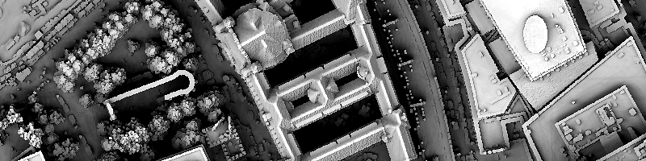
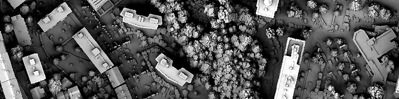

Sydney, Australia [33°51'S, 151°12'E] [36000 x 24000 pixels, 1 pixel = 0.5 m]
Elevation data published byNew South Wales Government - Spatial Services
with license Attribution 4.0 International (CC BY 4.0)
Antwerp, Belgium [51°13'N, 4°23'E] [18000 x 18000 pixels, 1 pixel = 0.5 m]
Elevation data published byAgentschap Digitaal Vlaanderen
with license Gratis open data licentie Vlaanderen v1.2 met bronvermelding
Brussels, Belgium [50°50'N, 4°21'E] [20000 x 20000 pixels, 1 pixel = 0.5 m]
Elevation data published byParadigm Brussels
with license Attribution 4.0 International (CC BY 4.0)
Sao Paulo, Brazil [23°32'S, 46°38'W] [16000 x 16000 pixels, 1 pixel = 0.5 m]
Elevation data published byPrefeitura de Sao Paulo
with license Attribution-ShareAlike 4.0 International (CC BY-SA 4.0)
Vancouver, Canada [49°16'N, 123°7'W] [16000 x 16000 pixels, 1 pixel = 0.5 m]
Elevation data published byCity of Vancouver
with Open Government Licence - Vancouver
Helsinki, Finland [60°10'N, 24°56'E] [18000 x 18000 pixels, 1 pixel = 0.5 m]
Elevation data published byHelsingin kaupunkiympäristön toimiala / Kaupunkimittauspalvelut
with license Attribution 4.0 International (CC BY 4.0)
Paris, France [48°51'N, 2°20'E] [24000 x 24000 pixels, 1 pixel = 0.5 m]
Elevation data published byInstitut national de l\'information géographique et forestière
with license Etalab 2.0
Berlin, Germany [52°31'N, 13°24'E] [20000 x 20000 pixels, 1 pixel = 0.5 m]
 Elevation data published byGeoportal Berlin / Airborne Laserscanning (ALS) Primäre 3D Laserscan-Daten
with data license Germany - Attribution - Version 2.0
Munich, Germany [48°8'N, 11°34'E] [16000 x 16000 pixels, 1 pixel = 0.5 m]
Elevation data published byBayerische Vermessungsverwaltung
with license CC BY 4.0 DEED Attribution 4.0 International
Firenze, Italy [43°46'N, 11°14'E] [16000 x 16000 pixels, 1 pixel = 0.5 m]
Elevation data published byComune di Firenze
with license Attribution 4.0 International (CC BY 4.0)
Amsterdam, Netherlands [52°22'N, 4°53'E] [20000 x 20000 pixels, 1 pixel = 0.5 m]
Elevation data published byRijkswaterstaat
with license CC0 1.0 Universal (CC0 1.0) Public Domain Dedication
The Hague, Netherlands [52°4'N, 4°18'E] [20000 x 20000 pixels, 1 pixel = 0.5 m]
Elevation data published byRijkswaterstaat
with license CC0 1.0 Universal (CC0 1.0) Public Domain Dedication
Maastricht, Netherlands [50°50'N, 5°41'E] [16000 x 16000 pixels, 1 pixel = 0.5 m]
Elevation data published byRijkswaterstaat
with license CC0 1.0 Universal (CC0 1.0) Public Domain Dedication
Rotterdam, Netherlands [51°55'N, 4°28'E] [20000 x 20000 pixels, 1 pixel = 0.5 m]
Elevation data published byRijkswaterstaat
with license CC0 1.0 Universal (CC0 1.0) Public Domain Dedication
Utrecht, Netherlands [52°5'N, 5°7'E] [20000 x 20000 pixels, 1 pixel = 0.5 m]
Elevation data published byRijkswaterstaat
with license CC0 1.0 Universal (CC0 1.0) Public Domain Dedication
Barcelona, Spain [41°23'N, 2°9'E] [16000 x 16000 pixels, 1 pixel = 0.8 m]
Elevation data published byOrganismo Autónomo Centro Nacional de Información Geográfica - PNOA-LiDAR
with license Attribution 4.0 International (CC BY 4.0)
Basel, Switzerland [47°33'N, 7°35'E] [20000 x 20000 pixels, 1 pixel = 0.5 m]
Elevation data published byFederal Office of Topography swisstopo
with license Open Government Data (OGD)
Bern, Switzerland [46°56'N, 7°26'E] [20000 x 20000 pixels, 1 pixel = 0.5 m]
Elevation data published byFederal Office of Topography swisstopo
with license Open Government Data (OGD)
Geneva, Switzerland [46°12'N, 6°8'E] [20000 x 20000 pixels, 1 pixel = 0.5 m]
Elevation data published byFederal Office of Topography swisstopo
with license Open Government Data (OGD)
Lausanne, Switzerland [46°31'N, 6°37'E] [20000 x 20000 pixels, 1 pixel = 0.5 m]
 Elevation data published byFederal Office of Topography swisstopo
with license Open Government Data (OGD)
Zürich, Switzerland [47°22'N, 8°32'E] [20000 x 20000 pixels, 1 pixel = 0.5 m]
Elevation data published byFederal Office of Topography swisstopo
with license Open Government Data (OGD)
Chicago, Illinois, USA [41°53'N, 87°37'W] [20000 x 20000 pixels, 1 pixel = 1.0 ft]
Elevation data published byU.S. Department of Commerce, National Oceanic and Atmospheric Administration
with license CC0 1.0 Universal
Portland, Oregon, USA [45°31'N, 122°40'W] [16000 x 16000 pixels, 1 pixel = 0.5 m]
Elevation data published byU.S. Geological Survey, National Geospatial Program
with license CC0 1.0 Universal